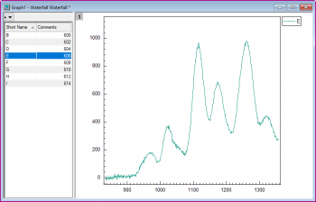
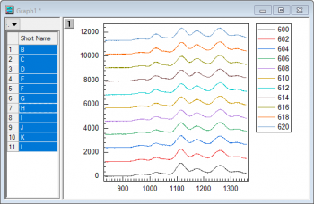
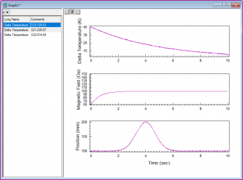
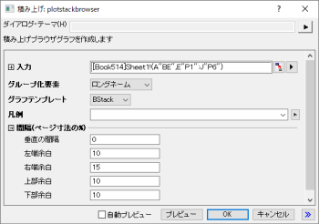

| |
|
|  |
|
| |
|
|  |  |
少なくとも1つのY列、あるいは、その部分領域を選択する必要があります。関連付けられたX列がある場合はそれを使用し、そうでない場合は、Y列のサンプリング間隔または行番号が使用されます。
データを選択します。
メニューから、を選択します。
作図> ブラウザ: 積み上げを選択した場合、「積み上げ:plotstackbrowser」ダイアログが開き、積み上げブラウザグラフを作成します。

このXファンクションは、Xファンクションplotstackに似ています。このダイアログの設定項目
BBLINE.OTP; BCLine.OTP; BHISTO.OTPU; BSLine.otpu; BStack.otpu （Originのプログラムフォルダにインストールされています）。
「積み上げ折れ線」ブラウザグラフは、選択した列を全て指定されたYオフセットでの積み上げ折れ線グラフとしてプロットします。デフォルトでは、作図の詳細ダイアログの積み上げ形式タブでのオフセットは自動でギャップ(%)は8に設定されています。各曲線は、前に表示された曲線と同じオフセットギャップで積み上げられます。
Note: :黒線または色付き折れ線のブラウザグラフの場合、下向き矢印ボタンをクリックしてYオフセット付き積み上げ折れ線コンテキストメニューを選択して、積み上げ折れ線グラフに切り替えることができます (逆も同様です)。
BStackテンプレートは、次の手順を実行して、編集してユーザーファイルフォルダに保存し、plotstackbrowserのグラフテンプレートに一覧表示することができます。
page.tkey$=GBStack
詳細は、ブラウザパネル付きのグラフのページを参照してください。